A Serra do Curral é a montanha que limita Belo Horizonte ao sul. Ela aparece de quase toda a cidade, é tombada como patrimônio e é o principal símbolo da capital mineira. O recurso analisado é a travessia da sua crista, entre o Parque das Mangabeiras e o Parque da Serra do Curral. O produto proposto é um circuito: sobe-se pelo Parque das Mangabeiras, percorre-se a crista até o Parque da Serra do Curral e volta-se ao ponto de partida.
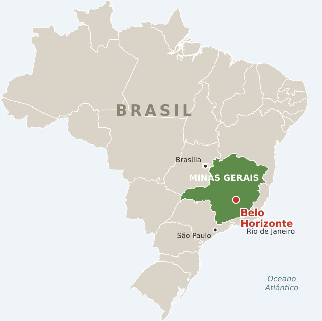
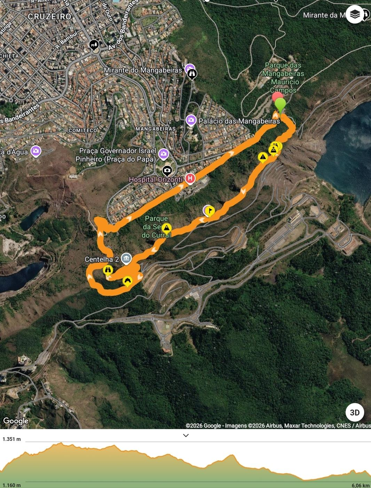
Pelo formulário de diagnóstico do SEBRAE-SP, o caso é de readequação, e não de formatação: o atrativo já existiu, tem estrutura, sinalização e público, mas hoje está fechado e desorganizado.
As duas áreas são parques municipais administrados pela Fundação de Parques Municipais e Zoobotânica (FPMZB). A travessia foi fechada em 2016, quando uma fenda se alargou na encosta próxima a uma antiga cava de mineração; no local também foi encontrada uma espécie de cacto ameaçada, e a Vale executou obras de contenção. Em 2014, ela só era permitida com monitor do parque e em dias úteis. Em novembro de 2024, a FPMZB e o Instituto Serra do Curral (ISC) assinaram um termo de cooperação de cinco anos para reabrir a trilha, com visitação "agendada e gratuita" e sem recursos públicos. O ISC operou travessias a partir de maio de 2025, mas em agosto anunciou o "fechamento temporário" para reformar os acessos e captar recursos. Hoje só está aberto o trecho até o Mirante 3.
De ônibus, a linha 4103 sai da Av. Afonso Pena, no centro, e para logo depois da Praça do Papa. De carro, há estacionamento no Parque das Mangabeiras. A entrada é gratuita, de terça a domingo, das 8h às 17h, com entrada até as 16h e limite de 700 visitantes por dia no Parque da Serra do Curral. A infraestrutura de apoio é boa: portarias e Praça do Encontro com banheiro e água, Praça Carlos Drummond com bebedouros e bancos, vagas para pessoas com deficiência, estrada interna com canaletas de drenagem, escadarias com corrimão e a plataforma do Mirante 3. A segurança também mudou: em 2004, quando fiz a trilha pela primeira vez, a área era perigosa; hoje há vigias, posto policial na portaria, câmeras e viatura em patrulha na crista.
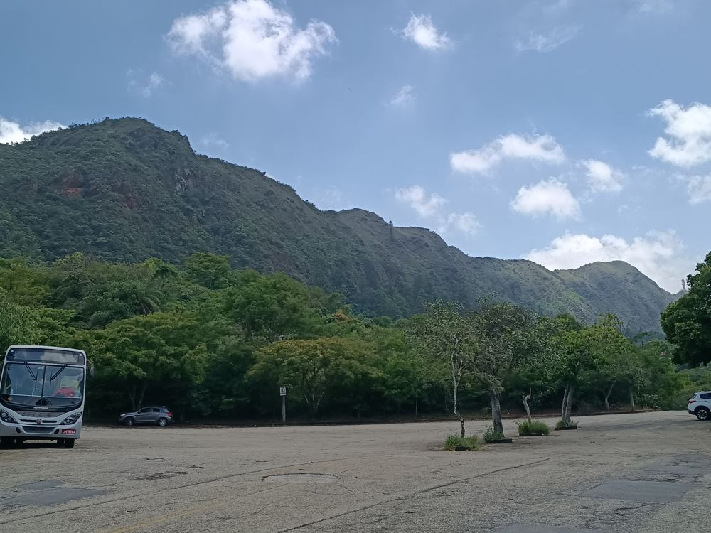
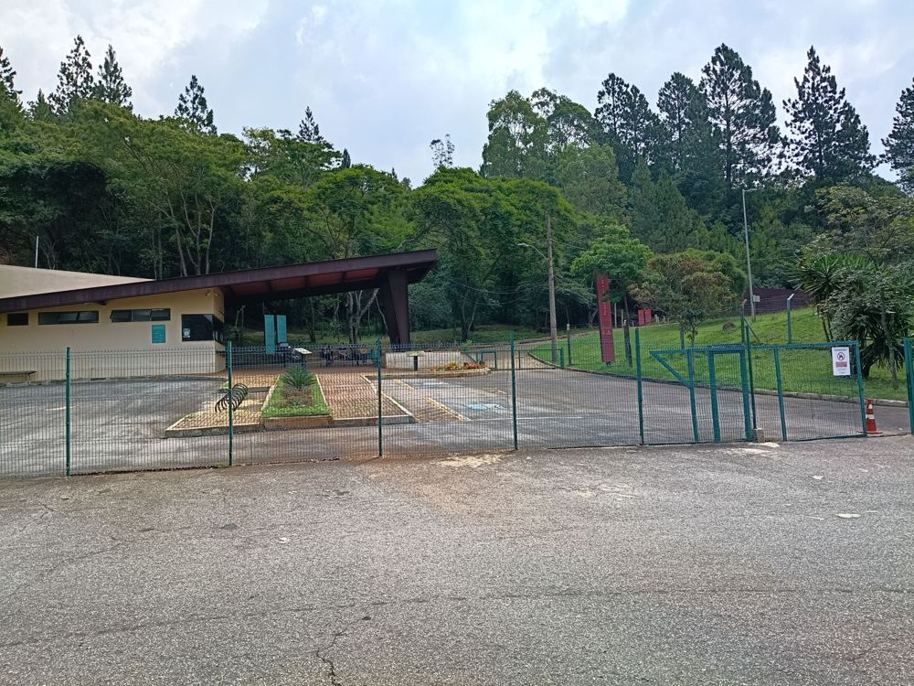
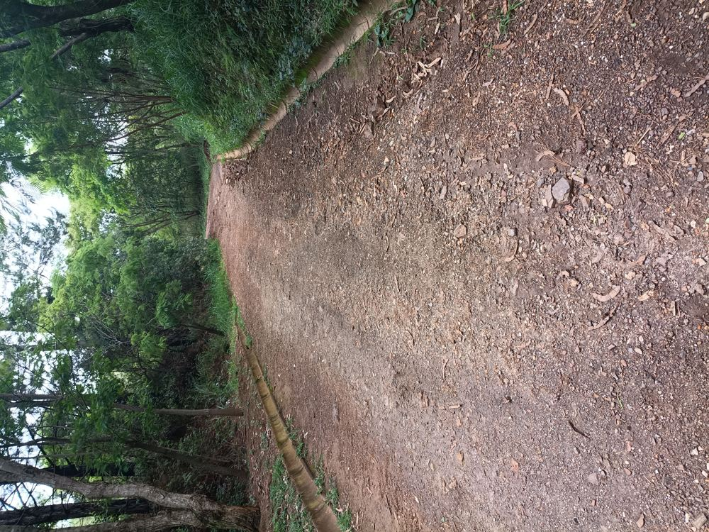
É o ponto mais degradado. Encontrei totens pichados e ilegíveis, placa arrancada no chão ao lado de uma barreira derrubada, informações cobertas com fita e o painel interpretativo com um documento histórico quase apagado. As regras também se contradizem: uma placa exige acompanhamento para menores de 10 anos, e o totem oficial, para menores de 14.
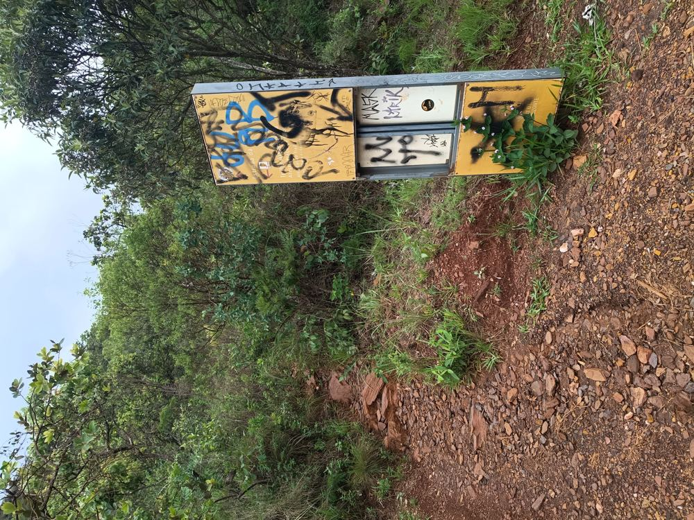
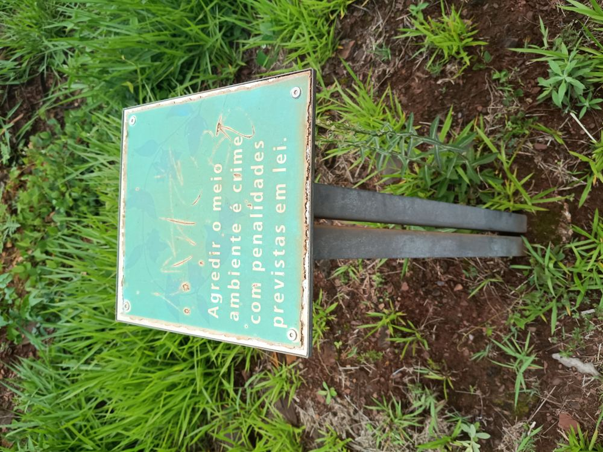
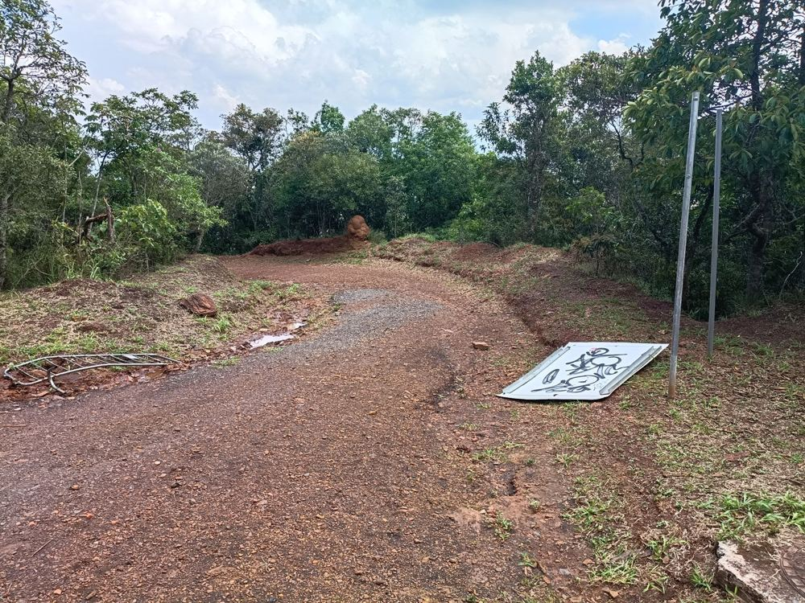
A Serra do Curral é uma das bordas do Quadrilátero Ferrífero, e dos mirantes se veem outras serras que o compõem. A rocha, em camadas, é muito vermelha e mancha a roupa por causa dos óxidos e hidróxidos de ferro. A vegetação de altitude, de feição de cerrado e campo rupestre, abriga uma avifauna rica, e o microclima é mais fresco que o da cidade. A vista é de 360 graus: de um lado, Belo Horizonte inteira e suas periferias; do outro, Nova Lima e o lago da antiga Mina de Águas Claras.
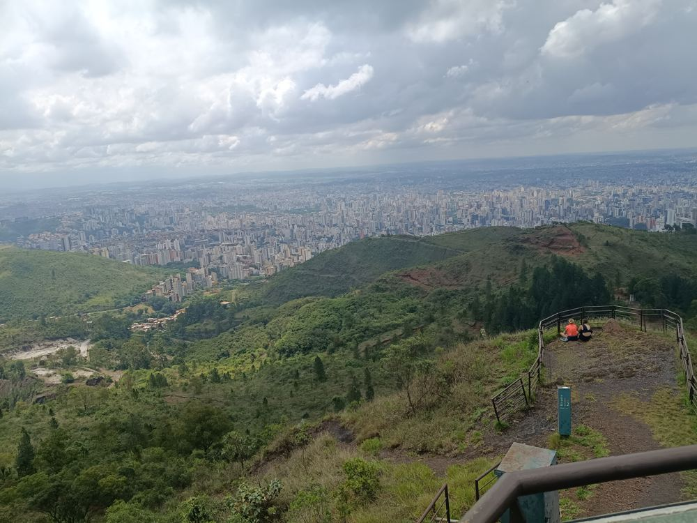
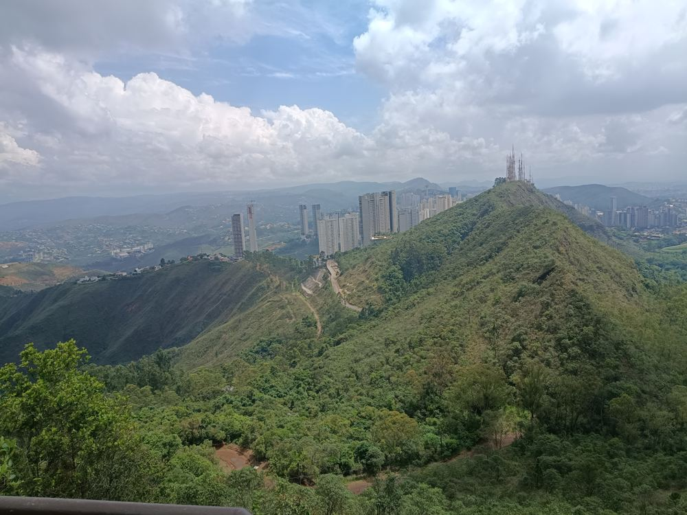
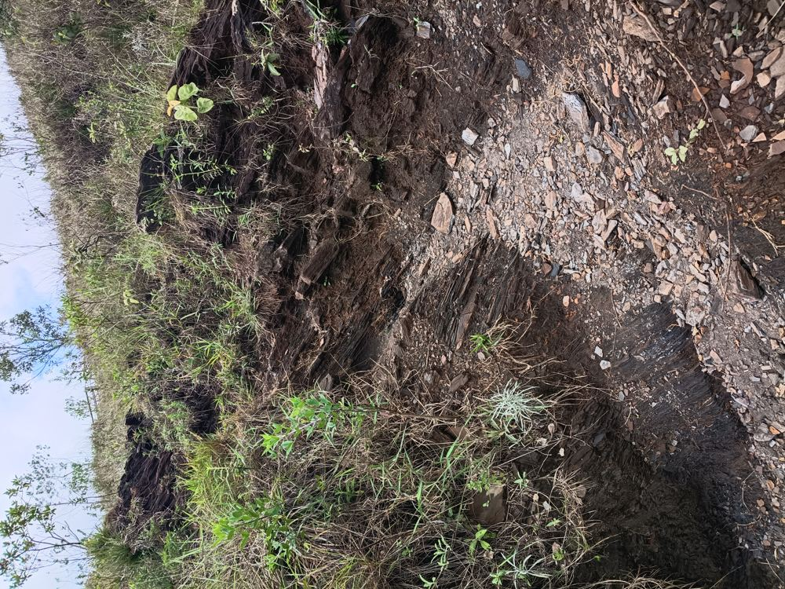
Dividi o circuito em três trechos e apliquei os quatro critérios da norma, em escala de 1 a 5. Cada critério recebe a nota do pior trecho.
| Critério | Grau | Justificativa |
|---|---|---|
| Severidade do meio | 3 | Oito fatores na crista: pedras soltas, risco de queda, uso das mãos, trechos pedregosos, piso escorregadio com chuva, longa exposição ao sol, neblina e ausência de água. Na estação chuvosa, a chuva intensa soma o nono fator e o grau sobe para 4. |
| Orientação no percurso | 2 | Poucas bifurcações e uma única saída, mas com sinalização deteriorada. Com sinalização nova, passa a grau 1. |
| Condições do terreno | 4 | Cerca de cinco trechos curtos, com menos de 30 m, exigem o uso das mãos. Mais de 80% do percurso tem grau menor, o que deve ser informado ao visitante. |
| Esforço físico | 3 | Índice de esforço de 3,4 h, calculado pela distância e pelo desnível de cada trecho, coerente com o tempo real de 3h a 3h30. |
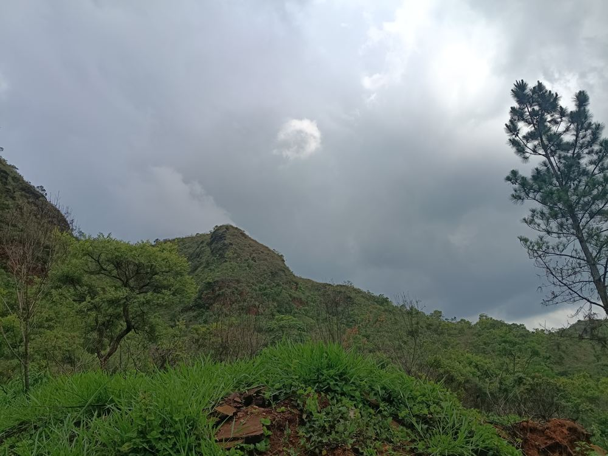
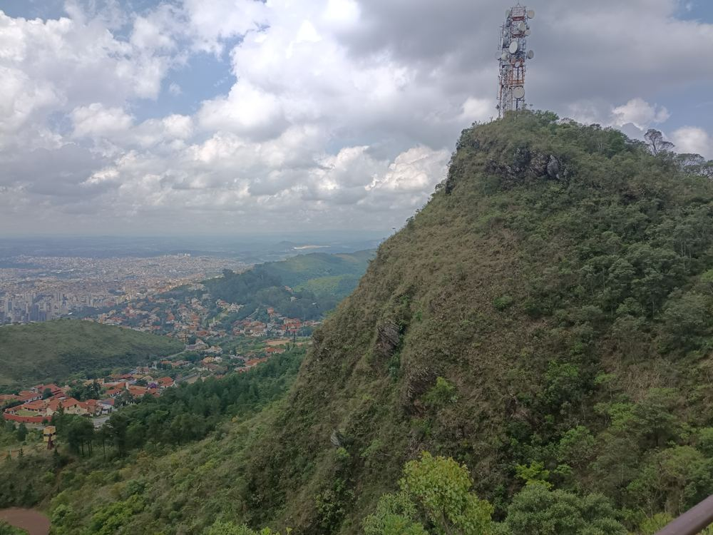
Gestão e modelo de visitação. Proponho um aditivo ao termo com cronograma, metas e relatório público de andamento. A visitação deve ser agendada e gratuita, com autonomia controlada: limite diário, horário-limite para início da travessia e termo de responsabilidade, com guias e monitores como opção, não como obrigação. O próprio termo diz que não pode "em hipótese alguma, servir para restringir o acesso ao parque". O modelo antigo, só com monitor e só em dias úteis, excluía justamente quem tem apenas o fim de semana livre.
Infraestrutura. Concluir a reforma dos pontos de acesso anunciada pelo ISC, fazer a drenagem do leito da trilha nos trechos com erosão e manter escadas e guarda-corpos, que o plano de trabalho já prioriza. Na crista, instalar marcos numerados, cadastrados com o Corpo de Bombeiros (193) e a Guarda Municipal, para que quem pedir socorro informe o código do marco e seja localizado de imediato.
Acessibilidade. O trecho até o Mirante 3 já é acessível. Proponho disponibilizar a cadeira Julietti, que pela minha avaliação do terreno, como quem já pilotou o equipamento, é viável no percurso inteiro. Os trechos críticos são as escadarias e a descida mais íngreme, e quatro condutores bastam porque a trilha é curta. Como não há norma de classificação para Julietti, proponho uma cotação própria: "Julietti avançada: 4 condutores, com transposição assistida nas escadarias e no trecho de Nível 4".
Sinalização. Novo projeto em material resistente a vandalismo, em português, inglês e espanhol, com QR code. O painel de entrada deve trazer a classificação da NBR 15505-2, como a norma recomenda no capítulo 7: os quatro critérios, desníveis, distância, tempo, perfil altimétrico e um mapa com curvas de nível, mais útil para trilheiros experientes. As regras precisam ser unificadas, para acabar com a contradição sobre idade mínima.
Serviços de apoio e comercialização. Os serviços físicos já são bons; faltam os digitais. Um site simples, em três línguas, com informações detalhadas, o traçado GPX, o agendamento e a reserva direta de guias da Vila Acaba Mundo, além de um canal separado para profissionais (guias, escolas e agências). Proponho também incluir a travessia no portfólio oficial de atrativos da Belotur, nos Centros de Atendimento ao Turista e nos roteiros oficiais, para gerar fluxo.
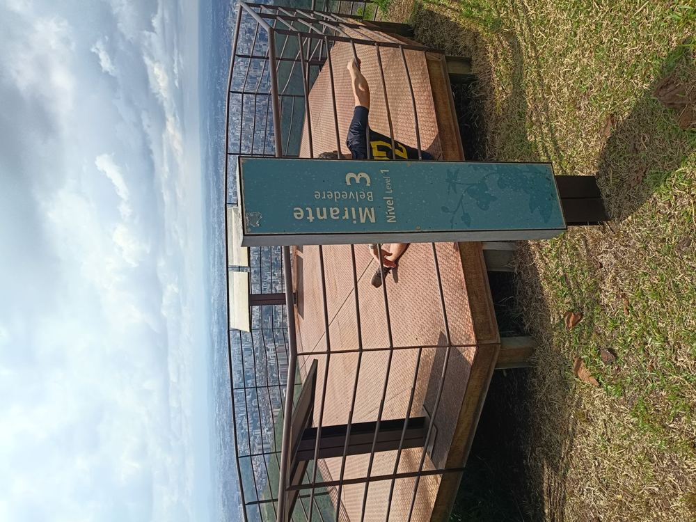
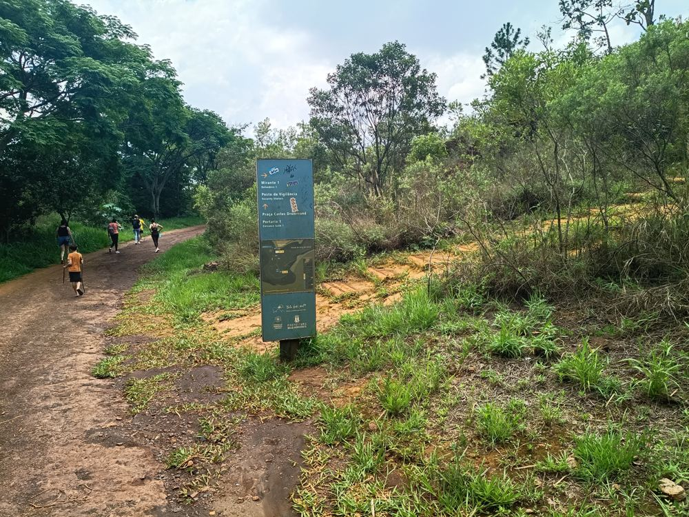
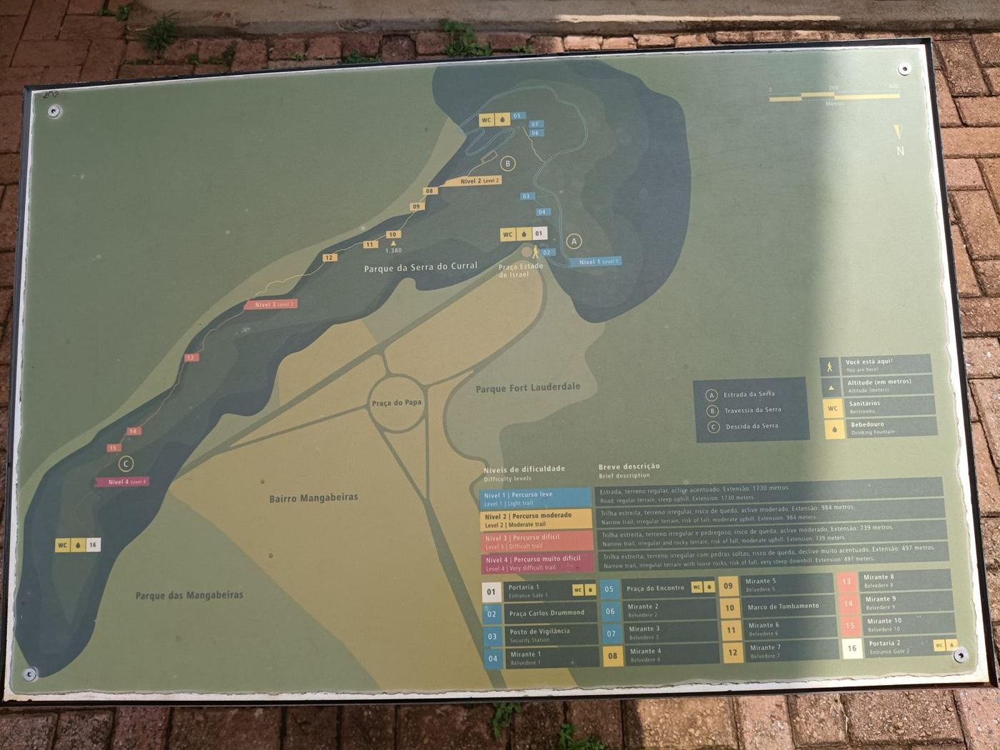
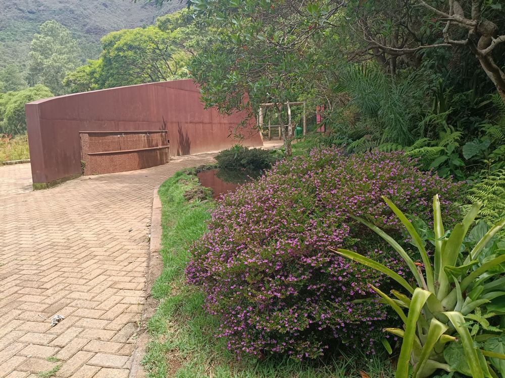
Concordo com a estratégia de interpretação prevista no termo de cooperação, que considero muito boa: aulas presenciais para alunos de escolas públicas, atividades com os escoteiros e com a Federação Mineira de Montanhismo e Escalada, aulas online gratuitas e acessíveis sobre a história, a geologia e a importância da Serra, e miniestações meteorológicas ao longo da trilha para mostrar a influência da Serra no clima da região metropolitana.
Como complemento, proponho restaurar o painel interpretativo da paisagem nos mirantes, que hoje está quase ilegível, e acrescentar placas autoguiadas com QR code em três línguas. Os temas já estão no percurso: a geologia do Quadrilátero Ferrífero, visível na cor da rocha e nas serras do horizonte; a mineração, com a antiga cava de um lado e a cidade do outro; e o poema de Drummond (1976): "Esta serra tem dono. Não mais a natureza a governa...".
Essa abordagem segue Tilden (1957), para quem a interpretação deve se relacionar com a experiência do visitante e provocá-lo, e Ham (1992), que defende uma interpretação temática, organizada, relevante e agradável.
Também aqui o termo foi muito bem feito. A cláusula 3.11 prevê ações de educação socioambiental nas comunidades do entorno, em especial a Vila Acaba Mundo, e a capacitação de guias locais para a Trilha da Crista. Esse é o caminho: guias da comunidade vizinha, com reserva direta pelo site e pelo canal de profissionais, geram renda local e criam vínculo de proteção com a Serra. Completa essa frente o projeto "Hike Cata Lixo", de coleta de lixo na trilha.
Conclusão: a travessia tem potencial regional, com potencial nacional por meio de eventos esportivos, e papel complementar no turismo internacional.
Pela singularidade, poucas capitais brasileiras oferecem uma trilha de montanha com vista de toda a cidade de um lado e de áreas de mineração do outro, num patrimônio tombado que é o símbolo da cidade. Pelo estado de conservação, a área protegida está em expansão (a área da antiga Mina Corumi deverá ser anexada ao Parque das Mangabeiras), a infraestrutura de apoio é boa e os problemas se concentram na sinalização e nos acessos, que têm solução conhecida. Pelo acesso, chega-se de ônibus do centro, sem custo de entrada. Pela capacidade de gerar experiências, o percurso combina esporte, saúde, um pouco de aventura, natureza e cultura.
O alcance regional e nacional vem dos moradores da região metropolitana, dos corredores de montanha atraídos por provas como a Vertical Run e do público dos grandes eventos de Belo Horizonte, como o Carnaval e o Comida di Buteco. A trilha também diversifica uma oferta muito ligada ao turismo de negócios: na pesquisa da Belotur de 2026, o lazer respondeu por 44% dos motivos de viagem, e as promoções de fim de semana, até em hotéis de alto padrão como o Ouro Minas, indicam ociosidade nesses dias. Uma atividade curta e para vários níveis pode levar o turista de negócios a estender a estadia pelo fim de semana. Para o turista estrangeiro, especialmente o europeu, que valoriza esse tipo de experiência, a travessia não justifica sozinha a viagem, mas soma-se à gastronomia e às cidades históricas como mais um motivo para vir a Belo Horizonte, desde que a trilha seja reaberta e a interpretação esteja concluída em outras línguas.
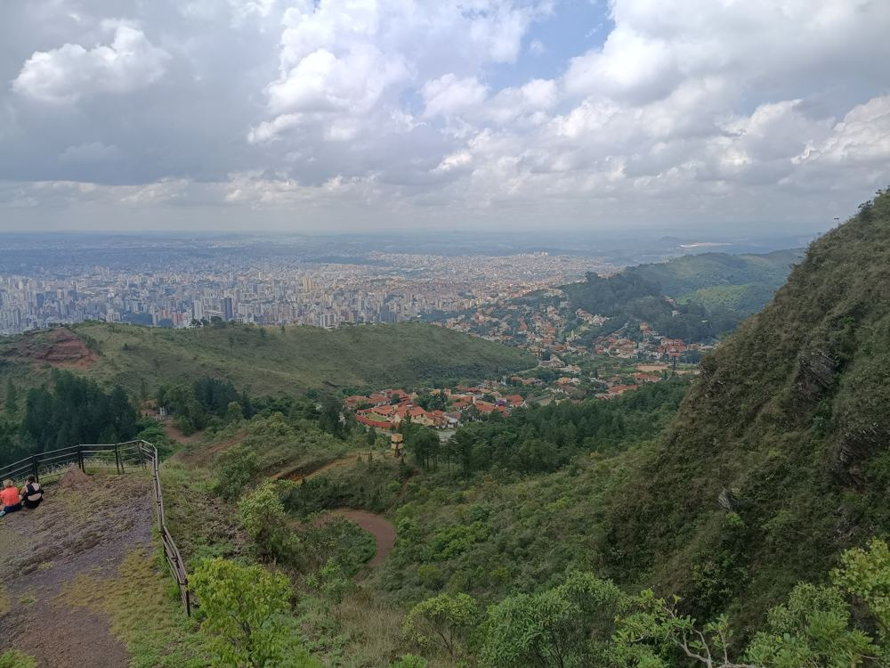
ABNT. NBR 15505-2:2019: Turismo de aventura – Caminhada – Parte 2: Classificação de percursos. Rio de Janeiro: ABNT, 2019.
ADVENTUREMAG. A 1ª Vertical Run BH agitou Belo Horizonte. 2025.
FUNDAÇÃO DE PARQUES MUNICIPAIS E ZOOBOTÂNICA; INSTITUTO SERRA DO CURRAL. Termo de Cooperação e Plano de Trabalho "Trilha Serra do Curral". Processo 01-044.847/24-46. Belo Horizonte, nov. 2024.
HAM, S. H. Environmental interpretation: a practical guide for people with big ideas and small budgets. Golden: North American Press, 1992.
INSTITUTO SERRA DO CURRAL. Comunicado oficial: fechamento temporário do acesso à Travessia da Crista. Instagram @institutoserradocurral, ago. 2025.
PREFEITURA DE BELO HORIZONTE. PBH e Instituto Serra do Curral assinam termo para reabrir Trilha da Crista. 7 nov. 2024.
PREFEITURA DE BELO HORIZONTE. Lazer segue sendo o principal motivo da visita de turistas a Belo Horizonte. Pesquisa de Demanda Turística Belotur, 2026.
SEBRAE-SP. Cadernos de Atrativos Turísticos 2: desenvolvimento do atrativo turístico. São Paulo: SEBRAE-SP.
TILDEN, F. Interpreting our heritage. Chapel Hill: University of North Carolina Press, 1957.
WIKILOC. Serra do Curral – Belo Horizonte – Minas Gerais BR. Traçado GPX, 2026.